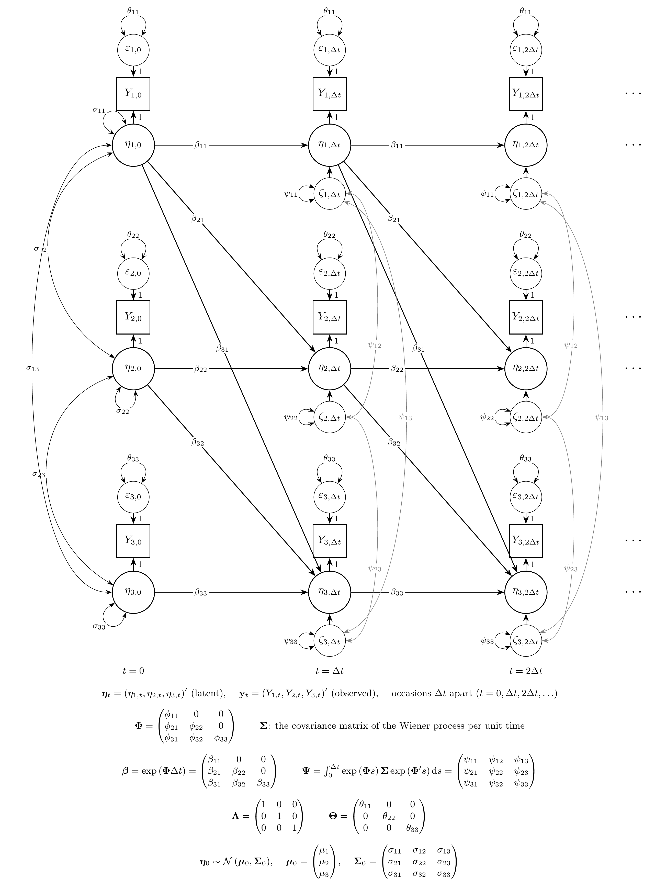
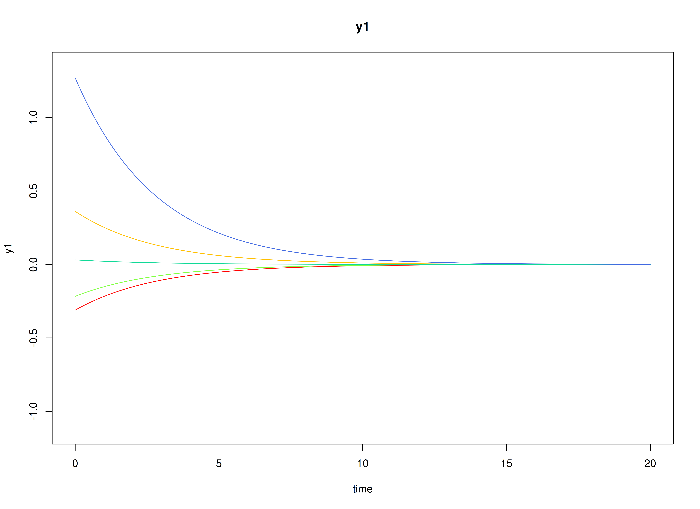
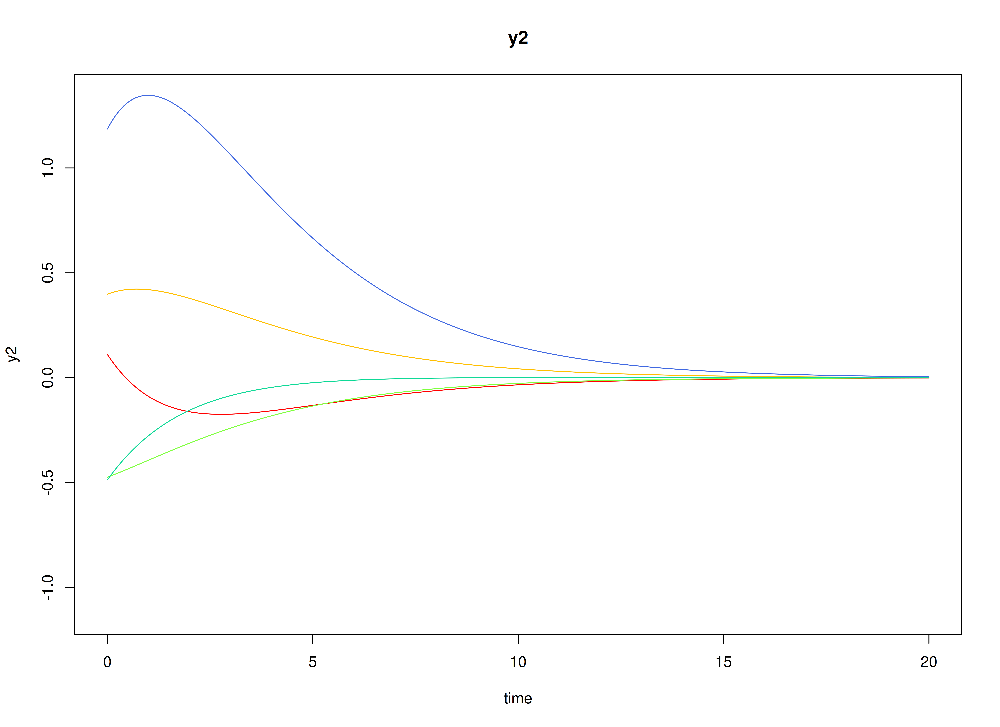
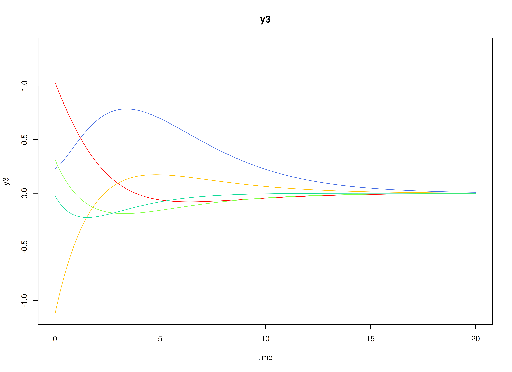
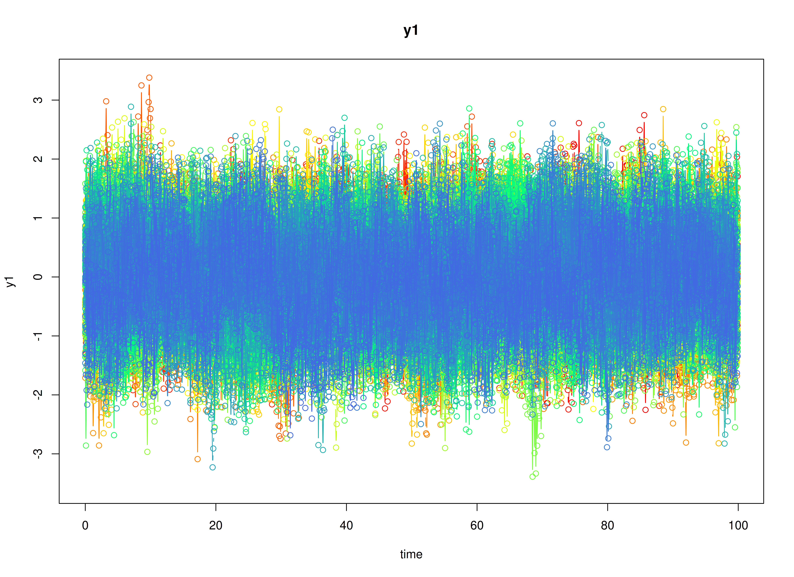
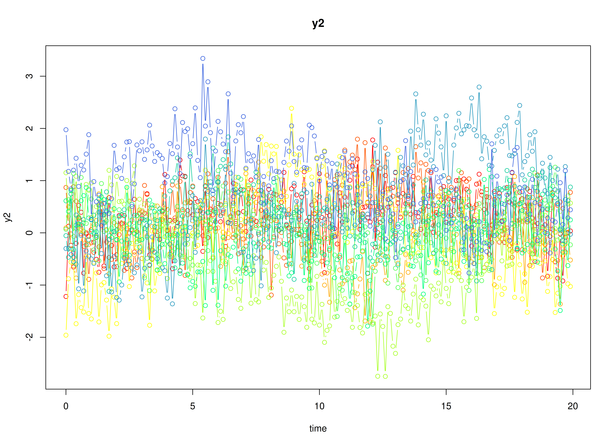
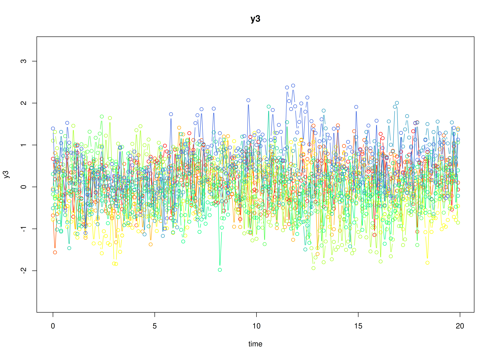
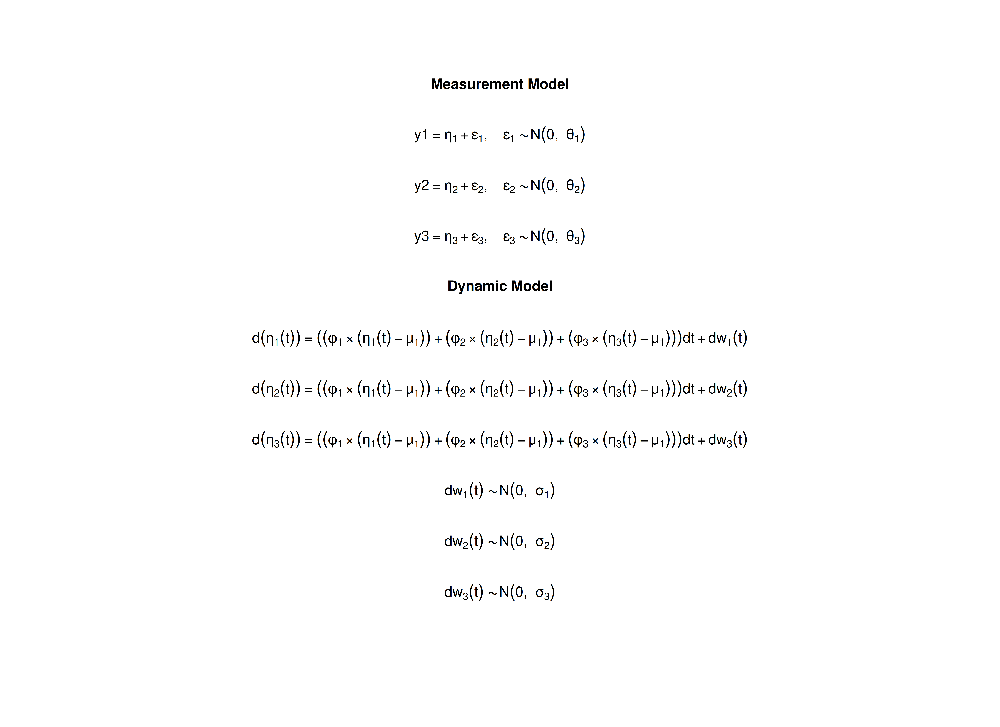

Overview
The Ornstein-Uhlenbeck (OU) model is a continuous-time model for variables that are pulled back toward an equilibrium level after they are pushed away from it, for example, mood returning to a person’s usual level after a stressful event. Continuous time means the model describes change at every moment, not only at the occasions we measure, so the same parameters apply whether measurements are one hour or one day apart, and the spacing can differ between occasions.
The model is a state space model with two parts: a measurement model that links the observed variables to the latent (unobserved) states, and a dynamic model, here a stochastic differential equation, that describes how the latent states change over time.
This tutorial does three things:
- It writes the multivariate OU model as a state space model.
- It simulates data from the model with
SimSSMOUFixed(), with every individual sharing the same parameters. - It fits the model to the simulated data with the
dynrandOpenMxpackages and compares both sets of estimates with the values used to simulate the data.
No prior knowledge of state space models is needed. The vignettes on the vector autoregressive model and the state space model cover the discrete-time versions.
Model
The measurement model is given by \mathbf{y}_{i, t} = \boldsymbol{\nu} + \boldsymbol{\Lambda} \boldsymbol{\eta}_{i, t} + \boldsymbol{\varepsilon}_{i, t}, \quad \mathrm{with} \quad \boldsymbol{\varepsilon}_{i, t} \sim \mathcal{N} \left( \mathbf{0}, \boldsymbol{\Theta} \right) where \mathbf{y}_{i, t}, \boldsymbol{\eta}_{i, t}, and \boldsymbol{\varepsilon}_{i, t} are random variables and \boldsymbol{\nu}, \boldsymbol{\Lambda}, and \boldsymbol{\Theta} are model parameters. \mathbf{y}_{i, t} represents a vector of observed random variables, \boldsymbol{\eta}_{i, t} a vector of latent random variables, and \boldsymbol{\varepsilon}_{i, t} a vector of random measurement errors, at time t and individual i. \boldsymbol{\nu} denotes a vector of intercepts, \boldsymbol{\Lambda} a matrix of factor loadings, and \boldsymbol{\Theta} the covariance matrix of \boldsymbol{\varepsilon}.
In words, each observed variable is an intercept plus a weighted combination of the latent variables plus measurement error. The latent variables \boldsymbol{\eta}_{i, t} are the quantities we care about (for example, a person’s true stress level), and the observed variables \mathbf{y}_{i, t} are noisy measurements of them. Separating measurement error from true change is the main reason to use a state space model: measurement error affects only the occasion it occurs on, while changes in the latent variables carry over in time.
An alternative representation of the measurement error is given by \boldsymbol{\varepsilon}_{i, t} = \boldsymbol{\Theta}^{\frac{1}{2}} \mathbf{z}_{i, t}, \quad \mathrm{with} \quad \mathbf{z}_{i, t} \sim \mathcal{N} \left( \mathbf{0}, \mathbf{I} \right) where \mathbf{z}_{i, t} is a vector of independent standard normal random variables and \left( \boldsymbol{\Theta}^{\frac{1}{2}} \right) \left( \boldsymbol{\Theta}^{\frac{1}{2}} \right)^{\prime} = \boldsymbol{\Theta} .
The dynamic structure is given by \mathrm{d} \boldsymbol{\eta}_{i, t} = \boldsymbol{\Phi} \left( \boldsymbol{\eta}_{i, t} - \boldsymbol{\mu} \right) \mathrm{d}t + \boldsymbol{\Sigma}^{\frac{1}{2}} \mathrm{d} \mathbf{W}_{i, t} where \boldsymbol{\mu} is the long-term mean or equilibrium level, \boldsymbol{\Phi} is the rate of mean reversion, determining how quickly the variable returns to its mean, \boldsymbol{\Sigma} is the matrix of volatility or randomness in the process, and \mathrm{d}\boldsymbol{W} is a Wiener process or Brownian motion, which represents random fluctuations.
In words, \mathrm{d} \boldsymbol{\eta}_{i, t} is the change in the latent variables over a very short time \mathrm{d}t. The change has two parts: a pull toward the equilibrium \boldsymbol{\mu}, proportional to the distance \boldsymbol{\eta}_{i, t} - \boldsymbol{\mu}, and random fluctuations with covariance \boldsymbol{\Sigma} per unit time.
- With this sign convention, a diagonal element \phi_{jj} is negative for a variable that returns to its equilibrium. The more negative it is, the faster the return.
- An off-diagonal element \phi_{jk} is the effect of the distance of variable k from its equilibrium on the rate of change of variable j. As in the discrete-time models, the row is the outcome and the column is the predictor.
For the process to settle around \boldsymbol{\mu}, all eigenvalues of \boldsymbol{\Phi} must have negative real parts.
Over a time interval \Delta t, the
OU model implies a discrete-time vector autoregressive model with
transition matrix \boldsymbol{\beta} = \exp
\left( \boldsymbol{\Phi} \Delta t \right), the matrix
exponential. SimSSMOUFixed() uses this exact discretization
to simulate the data, so no approximation error is introduced.
Diagram

The model in state space form, at the first three occasions of
measurement, \Delta t apart (t = 0, \Delta t, 2 \Delta t), with every
element of the state drawn. Squares are observed variables and circles
are latent variables. Each latent variable \eta_{j, t} has one indicator Y_{j, t} with a loading of 1, and measurement
error \varepsilon_{j, t} with variance
\theta_{jj}. The arrows between
occasions are the elements of \boldsymbol{\beta} = \exp \left( \boldsymbol{\Phi}
\Delta t \right). Because \boldsymbol{\Phi} is lower triangular in this
example, so is \boldsymbol{\beta}:
\eta_{1} affects \eta_{2} and \eta_{3}, and \eta_{2} affects \eta_{3}. \zeta_{j,
t} is the process noise from t = \Delta
t on. Its covariance matrix \boldsymbol{\Psi} follows from \boldsymbol{\Phi}, \boldsymbol{\Sigma}, and \Delta t and is full, so the process noise
terms covary (the gray arrows \psi_{jk}). A loop on a variable is its
variance and a curved two-headed arrow a covariance. At t = 0, the initial condition \boldsymbol{\eta}_{0} \sim \mathcal{N} \left(
\boldsymbol{\mu}_{0}, \boldsymbol{\Sigma}_{0} \right) gives the
variances \sigma_{jj} and covariances
\sigma_{jk} of the latent variables.
The exact discretization gives \boldsymbol{\beta} and \boldsymbol{\Psi} from \boldsymbol{\Phi}, \boldsymbol{\Sigma}, and \Delta t; \boldsymbol{\Lambda} maps the state to the
observed variables, and \boldsymbol{\Theta} is the covariance matrix
of the measurement error. SimSSMOUFixed() takes
phi, lambda, delta_t,
mu0, and the Cholesky factors of \boldsymbol{\Sigma}, \boldsymbol{\Theta}, and \boldsymbol{\Sigma}_{0}
(sigma_l, theta_l, and sigma0_l),
and does the discretization itself.
Data Generation
Notation
Let t = 1000 be the number of time points and n = 100 be the number of individuals.
Let the measurement model intercept vector \boldsymbol{\nu} be given by
\boldsymbol{\nu} = \left( \begin{array}{c} 0 \\ 0 \\ 0 \\ \end{array} \right) .
Let the factor loadings matrix \boldsymbol{\Lambda} be given by
\boldsymbol{\Lambda} = \left( \begin{array}{ccc} 1 & 0 & 0 \\ 0 & 1 & 0 \\ 0 & 0 & 1 \\ \end{array} \right) .
Let the measurement error covariance matrix \boldsymbol{\Theta} be given by
\boldsymbol{\Theta} = \left( \begin{array}{ccc} 0.2 & 0 & 0 \\ 0 & 0.2 & 0 \\ 0 & 0 & 0.2 \\ \end{array} \right) .
With \boldsymbol{\nu} = \mathbf{0} and \boldsymbol{\Lambda} = \mathbf{I}, each observed variable measures one latent variable, and \boldsymbol{\Theta} adds measurement error with variance 0.2 to each.
Let the initial condition \boldsymbol{\eta}_{0} be given by
\boldsymbol{\eta}_{0} \sim \mathcal{N} \left( \boldsymbol{\mu}_{0}, \boldsymbol{\Sigma}_{0} \right)
\boldsymbol{\mu}_{0} = \left( \begin{array}{c} 0 \\ 0 \\ 0 \\ \end{array} \right)
\boldsymbol{\Sigma}_{0} = \left( \begin{array}{ccc} 0.3425148 & 0.3296023 & 0.0343817 \\ 0.3296023 & 0.5664625 & 0.2545955 \\ 0.0343817 & 0.2545955 & 0.2999909 \\ \end{array} \right) .
Let the long-term mean vector \boldsymbol{\mu} be given by
\boldsymbol{\mu} = \left( \begin{array}{c} 0 \\ 0 \\ 0 \\ \end{array} \right) .
Let the rate of mean reversion matrix \boldsymbol{\Phi} be given by
\boldsymbol{\Phi} = \left( \begin{array}{ccc} -0.357 & 0 & 0 \\ 0.771 & -0.511 & 0 \\ -0.45 & 0.729 & -0.693 \\ \end{array} \right) .
Read the columns as predictors and the rows as outcomes. The diagonal elements are all negative, so each variable returns to its equilibrium. In addition, \eta_{1} pushes up the change in \eta_{2} (0.771), \eta_{2} pushes up the change in \eta_{3} (0.729), and \eta_{1} pushes down the change in \eta_{3} (-0.45). Because \boldsymbol{\Phi} is lower triangular, its eigenvalues are its diagonal elements, all negative, so the process is stable.
Let the dynamic process noise covariance matrix \boldsymbol{\Sigma} be given by
\boldsymbol{\Sigma} = \left( \begin{array}{ccc} 0.2445556 & 0.0220159 & -0.0500476 \\ 0.0220159 & 0.070678 & 0.0153946 \\ -0.0500476 & 0.0153946 & 0.0755306 \\ \end{array} \right) .
Let \Delta t = 0.1.
The data are measured every 0.1 time units. For example, if the time unit is one day, the 1000 occasions span 99.9 days.
The initial condition describes where each individual starts. Here,
the mean vector and covariance matrix of \boldsymbol{\eta}_{0} are the model-implied
mean and covariance of the stable process, computed with
LinSDEMeanEta() and LinSDECovEta(), so the
data are stationary from the first time point.
R Function Arguments
The simulation functions take covariance matrices as lower triangular
Cholesky factors (the arguments ending in _l).
n
#> [1] 100
time
#> [1] 1000
delta_t
#> [1] 0.1
mu0
#> [1] 0 0 0
sigma0
#> [,1] [,2] [,3]
#> [1,] 0.3425148 0.3296023 0.0343817
#> [2,] 0.3296023 0.5664625 0.2545955
#> [3,] 0.0343817 0.2545955 0.2999909
sigma0_l # sigma0_l <- t(chol(sigma0))
#> [,1] [,2] [,3]
#> [1,] 0.58524763 0.0000000 0.0000000
#> [2,] 0.56318429 0.4992855 0.0000000
#> [3,] 0.05874726 0.4436540 0.3157701
mu
#> [1] 0 0 0
phi
#> [,1] [,2] [,3]
#> [1,] -0.357 0.000 0.000
#> [2,] 0.771 -0.511 0.000
#> [3,] -0.450 0.729 -0.693
sigma
#> [,1] [,2] [,3]
#> [1,] 0.24455556 0.02201587 -0.05004762
#> [2,] 0.02201587 0.07067800 0.01539456
#> [3,] -0.05004762 0.01539456 0.07553061
sigma_l # sigma_l <- t(chol(sigma))
#> [,1] [,2] [,3]
#> [1,] 0.49452559 0.0000000 0.000000
#> [2,] 0.04451917 0.2620993 0.000000
#> [3,] -0.10120330 0.0759256 0.243975
nu
#> [1] 0 0 0
lambda
#> [,1] [,2] [,3]
#> [1,] 1 0 0
#> [2,] 0 1 0
#> [3,] 0 0 1
theta
#> [,1] [,2] [,3]
#> [1,] 0.2 0.0 0.0
#> [2,] 0.0 0.2 0.0
#> [3,] 0.0 0.0 0.2
theta_l # theta_l <- t(chol(theta))
#> [,1] [,2] [,3]
#> [1,] 0.4472136 0.0000000 0.0000000
#> [2,] 0.0000000 0.4472136 0.0000000
#> [3,] 0.0000000 0.0000000 0.4472136Visualizing the Dynamics Without Measurement Error and Process Noise (n = 5 with Different Initial Condition)
To see what \boldsymbol{\Phi} alone does, we first simulate five individuals with the process noise and the measurement error set to zero. Each individual starts at a different point, and the trajectories return to the equilibrium at a speed set by \boldsymbol{\Phi}.



Using the SimSSMOUFixed Function from the
simStateSpace Package to Simulate Data
Now we add the process noise and the measurement error and simulate
the full data set. as.data.frame() returns the data in long
format, one row per individual and time point, with the columns
id, time, y1, y2,
and y3. The time column holds the actual
measurement times (0, 0.1, 0.2, and so on), which the continuous-time
model uses.
library(simStateSpace)
sim <- SimSSMOUFixed(
n = n,
time = time,
delta_t = delta_t,
mu0 = mu0,
sigma0_l = sigma0_l,
mu = mu,
phi = phi,
sigma_l = sigma_l,
nu = nu,
lambda = lambda,
theta_l = theta_l,
type = 0
)
data <- as.data.frame(sim)
head(data)
#> id time y1 y2 y3
#> 1 1 0.0 0.45047365 -1.2185550 0.6708638
#> 2 1 0.1 -0.84190461 0.1242594 0.1813493
#> 3 1 0.2 0.47289651 -0.2398710 0.5995107
#> 4 1 0.3 0.04089817 -0.6547109 0.4674929
#> 5 1 0.4 -1.37222946 -0.2010512 -0.3341885
#> 6 1 0.5 -0.62410106 0.5262251 -0.1892906
summary(data)
#> id time y1 y2
#> Min. : 1.00 Min. : 0.00 Min. :-3.387237 Min. :-3.561919
#> 1st Qu.: 25.75 1st Qu.:24.98 1st Qu.:-0.497505 1st Qu.:-0.593119
#> Median : 50.50 Median :49.95 Median : 0.002308 Median : 0.002867
#> Mean : 50.50 Mean :49.95 Mean : 0.002420 Mean : 0.001311
#> 3rd Qu.: 75.25 3rd Qu.:74.92 3rd Qu.: 0.507538 3rd Qu.: 0.600379
#> Max. :100.00 Max. :99.90 Max. : 3.381345 Max. : 3.415473
#> y3
#> Min. :-2.9091510
#> 1st Qu.:-0.4779403
#> Median : 0.0006008
#> Mean : 0.0019631
#> 3rd Qu.: 0.4815267
#> Max. : 3.0074722
plot(sim)


Model Fitting
The same simulated data are fitted with two programs that estimate
state space models by maximum likelihood with the Kalman filter:
dynr and OpenMx. The section Population Values
and Estimates compares their estimates with the population values.
dynr
We fit the model with dynr, which estimates state space
models by maximum likelihood. For continuous-time models,
dynr uses the time between measurements to get the implied
discrete-time model for each interval, then applies the Kalman
filter.
A dynr model is built from pieces that match the
equations above: the data, the initial condition, the measurement model,
the dynamic model, and the noise. Each parameter gets a name (for
example, phi_2_1 for \phi_{21}`), and the same name used in two
places means one shared parameter. The starting values are set to the
population values for convenience; with real data, they would be rough
guesses.
Prepare Initial Condition
The mean \boldsymbol{\mu}_{0} and
covariance \boldsymbol{\Sigma}_{0} of
the initial state are estimated. The covariance matrix is symmetric, so
sigma0_2_1 appears both above and below the diagonal.
dynr_initial <- dynr::prep.initial(
values.inistate = mu0,
params.inistate = c("mu0_1_1", "mu0_2_1", "mu0_3_1"),
values.inicov = sigma0,
params.inicov = matrix(
data = c(
"sigma0_1_1", "sigma0_2_1", "sigma0_3_1",
"sigma0_2_1", "sigma0_2_2", "sigma0_3_2",
"sigma0_3_1", "sigma0_3_2", "sigma0_3_3"
),
nrow = 3
)
)Prepare Measurement Model
The loadings \boldsymbol{\Lambda}
are an identity matrix with no free parameters
("fixed").
dynr_measurement <- dynr::prep.measurement(
values.load = diag(3),
params.load = matrix(data = "fixed", nrow = 3, ncol = 3),
state.names = c("eta_1", "eta_2", "eta_3"),
obs.names = c("y1", "y2", "y3")
)Prepare Dynamic Process
Each formula is the rate of change of one latent variable: the
effects \phi_{jk} of the distances of
the three latent variables from their equilibria \mu_{k}. isContinuousTime = TRUE
makes this a continuous-time model.
dynr_dynamics <- dynr::prep.formulaDynamics(
formula = list(
eta_1 ~ (phi_1_1 * (eta_1 - mu_1_1)) + (phi_1_2 * (eta_2 - mu_2_1)) + (phi_1_3 * (eta_3 - mu_3_1)),
eta_2 ~ (phi_2_1 * (eta_1 - mu_1_1)) + (phi_2_2 * (eta_2 - mu_2_1)) + (phi_2_3 * (eta_3 - mu_3_1)),
eta_3 ~ (phi_3_1 * (eta_1 - mu_1_1)) + (phi_3_2 * (eta_2 - mu_2_1)) + (phi_3_3 * (eta_3 - mu_3_1))
),
startval = c(
mu_1_1 = mu[1], mu_2_1 = mu[2], mu_3_1 = mu[3],
phi_1_1 = phi[1, 1], phi_1_2 = phi[1, 2], phi_1_3 = phi[1, 3],
phi_2_1 = phi[2, 1], phi_2_2 = phi[2, 2], phi_2_3 = phi[2, 3],
phi_3_1 = phi[3, 1], phi_3_2 = phi[3, 2], phi_3_3 = phi[3, 3]
),
isContinuousTime = TRUE
)Prepare Process Noise
The diffusion covariance \boldsymbol{\Sigma} is estimated in full. The measurement error covariance \boldsymbol{\Theta} is diagonal: the three error variances are estimated, and the error covariances are fixed at zero.
dynr_noise <- dynr::prep.noise(
values.latent = sigma,
params.latent = matrix(
data = c(
"sigma_1_1", "sigma_2_1", "sigma_3_1",
"sigma_2_1", "sigma_2_2", "sigma_3_2",
"sigma_3_1", "sigma_3_2", "sigma_3_3"
),
nrow = 3
),
values.observed = theta,
params.observed = matrix(
data = c(
"theta_1_1", "fixed", "fixed",
"fixed", "theta_2_2", "fixed",
"fixed", "fixed", "theta_3_3"
),
nrow = 3
)
)Prepare the Model
The pieces are put together into one model. dynr writes
the model as C code to outfile and compiles it.
model <- dynr::dynr.model(
data = dynr_data,
initial = dynr_initial,
measurement = dynr_measurement,
dynamics = dynr_dynamics,
noise = dynr_noise,
outfile = "ou.c"
)Add lower and upper bounds on the elements of \boldsymbol{\Phi} to keep the optimizer away from implausible values.
model$lb[
c(
"phi_1_1",
"phi_1_2",
"phi_1_3",
"phi_2_1",
"phi_2_2",
"phi_2_3",
"phi_3_1",
"phi_3_2",
"phi_3_3"
)
] <- -1.5
model$ub[
c(
"phi_1_1",
"phi_1_2",
"phi_1_3",
"phi_2_1",
"phi_2_2",
"phi_2_3",
"phi_3_1",
"phi_3_2",
"phi_3_3"
)
] <- +1.5The plot below shows the model equations with the parameter names.

Fit the Model
results <- dynr::dynr.cook(
model,
debug_flag = TRUE,
verbose = FALSE
)
#> [1] "Get ready!!!!"
#> using C compiler: ‘gcc (Ubuntu 15.2.0-16ubuntu1) 15.2.0’
#> Optimization function called.
#> Starting Hessian calculation ...
#> Finished Hessian calculation.
#> Original exit flag: 3
#> Modified exit flag: 3
#> Optimization terminated successfully: ftol_rel or ftol_abs was reached.
#> Original fitted parameters: -0.001501749 -0.003500332 0.001443768 -0.387694
#> 0.04972841 -0.05067678 0.7575061 -0.5020862 -0.001011028 -0.4483795 0.716618
#> -0.6816484 -1.397822 0.08916094 -0.2066129 -2.670704 0.2873742 -2.880182
#> -1.615788 -1.611792 -1.602987 0.01193983 -0.03513501 -0.02020655 -1.023031
#> 0.9898482 0.1951355 -1.49308 0.8762691 -2.10898
#>
#> Transformed fitted parameters: -0.001501749 -0.003500332 0.001443768 -0.387694
#> 0.04972841 -0.05067678 0.7575061 -0.5020862 -0.001011028 -0.4483795 0.716618
#> -0.6816484 0.2471347 0.02203476 -0.05106122 0.07116811 0.01533463 0.07238957
#> 0.1987341 0.1995297 0.2012943 0.01193983 -0.03513501 -0.02020655 0.3595035
#> 0.3558538 0.07015187 0.5769208 0.2663194 0.3075704
#>
#> Doing end processing
#> Successful trial
#> Total Time: 37.25873
#> Backend Time: 37.25129Summary
The summary lists each estimate with its standard error, t value, confidence interval, and p value.
summary(results)
#> Coefficients:
#> Estimate Std. Error t value ci.lower ci.upper Pr(>|t|)
#> mu_1_1 -0.001502 0.014185 -0.106 -0.029303 0.026300 0.4578
#> mu_2_1 -0.003500 0.022729 -0.154 -0.048049 0.041049 0.4388
#> mu_3_1 0.001444 0.014422 0.100 -0.026823 0.029711 0.4601
#> phi_1_1 -0.387694 0.047641 -8.138 -0.481068 -0.294320 <0.0000000000000002
#> phi_1_2 0.049728 0.041464 1.199 -0.031539 0.130996 0.1152
#> phi_1_3 -0.050677 0.030656 -1.653 -0.110761 0.009408 0.0492
#> phi_2_1 0.757506 0.023804 31.823 0.710851 0.804161 <0.0000000000000002
#> phi_2_2 -0.502086 0.021038 -23.865 -0.543321 -0.460852 <0.0000000000000002
#> phi_2_3 -0.001011 0.016016 -0.063 -0.032402 0.030380 0.4748
#> phi_3_1 -0.448379 0.025326 -17.705 -0.498017 -0.398742 <0.0000000000000002
#> phi_3_2 0.716618 0.022333 32.088 0.672847 0.760389 <0.0000000000000002
#> phi_3_3 -0.681648 0.017091 -39.883 -0.715146 -0.648150 <0.0000000000000002
#> sigma_1_1 0.247135 0.008071 30.618 0.231315 0.262954 <0.0000000000000002
#> sigma_2_1 0.022035 0.002742 8.036 0.016660 0.027409 <0.0000000000000002
#> sigma_3_1 -0.051061 0.002865 -17.822 -0.056677 -0.045446 <0.0000000000000002
#> sigma_2_2 0.071168 0.001947 36.546 0.067351 0.074985 <0.0000000000000002
#> sigma_3_2 0.015335 0.001380 11.116 0.012631 0.018038 <0.0000000000000002
#> sigma_3_3 0.072390 0.002097 34.526 0.068280 0.076499 <0.0000000000000002
#> theta_1_1 0.198734 0.001209 164.343 0.196364 0.201104 <0.0000000000000002
#> theta_2_2 0.199530 0.001002 199.200 0.197567 0.201493 <0.0000000000000002
#> theta_3_3 0.201294 0.001017 198.023 0.199302 0.203287 <0.0000000000000002
#> mu0_1_1 0.011940 0.066584 0.179 -0.118562 0.142441 0.4288
#> mu0_2_1 -0.035135 0.081884 -0.429 -0.195625 0.125355 0.3339
#> mu0_3_1 -0.020207 0.060242 -0.335 -0.138279 0.097866 0.3687
#> sigma0_1_1 0.359503 0.060954 5.898 0.240035 0.478972 <0.0000000000000002
#> sigma0_2_1 0.355854 0.064701 5.500 0.229042 0.482665 <0.0000000000000002
#> sigma0_3_1 0.070152 0.040074 1.751 -0.008392 0.148696 0.0400
#> sigma0_2_2 0.576921 0.091953 6.274 0.396697 0.757145 <0.0000000000000002
#> sigma0_3_2 0.266319 0.056148 4.743 0.156272 0.376367 <0.0000000000000002
#> sigma0_3_3 0.307570 0.051144 6.014 0.207330 0.407811 <0.0000000000000002
#>
#> mu_1_1
#> mu_2_1
#> mu_3_1
#> phi_1_1 ***
#> phi_1_2
#> phi_1_3 *
#> phi_2_1 ***
#> phi_2_2 ***
#> phi_2_3
#> phi_3_1 ***
#> phi_3_2 ***
#> phi_3_3 ***
#> sigma_1_1 ***
#> sigma_2_1 ***
#> sigma_3_1 ***
#> sigma_2_2 ***
#> sigma_3_2 ***
#> sigma_3_3 ***
#> theta_1_1 ***
#> theta_2_2 ***
#> theta_3_3 ***
#> mu0_1_1
#> mu0_2_1
#> mu0_3_1
#> sigma0_1_1 ***
#> sigma0_2_1 ***
#> sigma0_3_1 *
#> sigma0_2_2 ***
#> sigma0_3_2 ***
#> sigma0_3_3 ***
#> ---
#> Signif. codes: 0 '***' 0.001 '**' 0.01 '*' 0.05 '.' 0.1 ' ' 1
#>
#> -2 log-likelihood value at convergence = 429162.30
#> AIC = 429222.30
#> BIC = 429507.68OpenMx: State Space Model
OpenMx (Neale et al.,
2016) fits the same state space model with its own Kalman filter
(OpenMx::mxExpectationStateSpace(); Hunter (2018)). Its matrices have the names used
in engineering: A is the transition matrix \boldsymbol{\beta}, B holds the
intercepts of the dynamic model, C is the loading matrix
\boldsymbol{\Lambda}, D
holds the intercepts of the measurement model, Q is the
process noise covariance matrix, and R is the measurement
error covariance matrix. The parameter labels are the dynr names; as in
dynr, a label used in two places is one shared parameter, and the
starting values are the population values.
Two details differ from dynr. First, OpenMx reads the data as a single time series. To start the filter again at the first occasion of every individual, each individual gets a group, and all groups use the matrices of one parent model, so every individual has the same parameters. Second, OpenMx starts the filter one occasion before the first row, so the first row has the state mean \mathbf{A} \mathbf{x}_{0} + \mathbf{B} \mathbf{u} and the state covariance \mathbf{A} \mathbf{P}_{0} \mathbf{A}^{\prime} + \mathbf{Q}, with the constant input \mathbf{u} = 1. Setting \mathbf{x}_{0} = \mathbf{A}^{-1} \left( \boldsymbol{\mu}_{0} - \mathbf{B} \mathbf{u} \right) and \mathbf{P}_{0} = \mathbf{A}^{-1} \left( \boldsymbol{\Sigma}_{0} - \mathbf{Q} \right) \left( \mathbf{A}^{-1} \right)^{\prime} gives the first occasion the initial condition of the model, so the likelihood is the same as in dynr. This needs an invertible \mathbf{A}, which holds here.
The two helper functions below are the same in every vignette of the
package. MxMat() makes an OpenMx matrix from values and
dynr-style labels ("fixed" marks a fixed element), and
FitMxSSM() builds the groups and fits the model.
MxMat <- function(values, labels, name) {
values <- as.matrix(values)
labels <- matrix(
data = labels,
nrow = nrow(values),
ncol = ncol(values)
)
free <- labels != "fixed"
labels[!free] <- NA
OpenMx::mxMatrix(
type = "Full",
values = values,
free = free,
labels = labels,
name = name
)
}
FitMxSSM <- function(data, observed, matrices, name) {
# the groups refer to the matrices of the parent model
shared <- function(x) {
paste0(name, ".", x)
}
expectation <- OpenMx::mxExpectationStateSpace(
A = shared("A"),
B = shared("B"),
C = shared("C"),
D = shared("D"),
Q = shared("Q"),
R = shared("R"),
x0 = shared("x0"),
P0 = shared("P0"),
u = shared("u")
)
# OpenMx needs the names of the observed variables and of the states on C
for (i in seq_along(matrices)) {
if (matrices[[i]]$name == "C") {
dimnames(matrices[[i]]) <- list(
observed,
paste0("eta_", seq_len(ncol(matrices[[i]]$values)))
)
}
}
persons <- split(
x = data[, observed, drop = FALSE],
f = data[, "id"]
)
groups <- paste0("id_", names(persons))
submodels <- lapply(
X = seq_along(persons),
FUN = function(i) {
OpenMx::mxModel(
name = groups[i],
expectation,
OpenMx::mxFitFunctionML(),
OpenMx::mxData(
observed = persons[[i]],
type = "raw"
)
)
}
)
model <- OpenMx::mxModel(
name = name,
matrices,
OpenMx::mxMatrix(
type = "Unit",
nrow = 1,
ncol = 1,
name = "u"
),
# the first occasion gets the initial condition of the model
OpenMx::mxAlgebra(
expression = solve(A) %*% (mu0 - B %*% u),
name = "x0"
),
OpenMx::mxAlgebra(
expression = solve(A) %*% (sigma0 - Q) %*% t(solve(A)),
name = "P0"
),
submodels,
OpenMx::mxFitFunctionMultigroup(groups = groups)
)
# retries from perturbed starting values only if the first run fails
OpenMx::mxTryHard(
model = model,
extraTries = 5,
silent = TRUE
)
}The model is in continuous time, so the discrete-time matrices
A, B, and Q are the exact
discretization of the drift matrix \boldsymbol{\Phi}, the equilibrium \boldsymbol{\mu}, and the diffusion matrix
\boldsymbol{\Sigma} over the interval
\Delta_{t}, written as OpenMx algebras:
\mathbf{A} = \exp \left( \boldsymbol{\Phi}
\Delta_{t} \right), \mathbf{B} = \left(
\mathbf{I} - \mathbf{A} \right) \boldsymbol{\mu}, and \mathbf{Q} from the matrix exponential of a
block matrix (Van Loan, 1978). The free
parameters are still \boldsymbol{\Phi},
\boldsymbol{\mu}, and \boldsymbol{\Sigma}, with the dynr labels. We
use the discrete-time expectation with these algebras rather than
OpenMx::mxExpectationStateSpaceContinuousTime(): in our
checks with OpenMx 2.22.11, its process noise covariance over an
interval did not match the exact one when \boldsymbol{\Phi} is not symmetric. The
matrix exponential omxExponential() in the algebras is also
evaluated in R, so OpenMx is attached.
library(OpenMx)
#> To take full advantage of multiple cores, use:
#> mxOption(key='Number of Threads', value=parallel::detectCores()) #now
#> Sys.setenv(OMP_NUM_THREADS=parallel::detectCores()) #before library(OpenMx)
labels_phi <- matrix(
data = c(
"phi_1_1", "phi_2_1", "phi_3_1",
"phi_1_2", "phi_2_2", "phi_3_2",
"phi_1_3", "phi_2_3", "phi_3_3"
),
nrow = 3
)
labels_sigma <- matrix(
data = c(
"sigma_1_1", "sigma_2_1", "sigma_3_1",
"sigma_2_1", "sigma_2_2", "sigma_3_2",
"sigma_3_1", "sigma_3_2", "sigma_3_3"
),
nrow = 3
)
labels_theta <- matrix(
data = c(
"theta_1_1", "fixed", "fixed",
"fixed", "theta_2_2", "fixed",
"fixed", "fixed", "theta_3_3"
),
nrow = 3
)
labels_sigma0 <- matrix(
data = c(
"sigma0_1_1", "sigma0_2_1", "sigma0_3_1",
"sigma0_2_1", "sigma0_2_2", "sigma0_3_2",
"sigma0_3_1", "sigma0_3_2", "sigma0_3_3"
),
nrow = 3
)
mx_matrices <- list(
MxMat(values = phi, labels = labels_phi, name = "phi"),
MxMat(
values = mu,
labels = c("mu_1_1", "mu_2_1", "mu_3_1"),
name = "mu"
),
MxMat(values = sigma, labels = labels_sigma, name = "sigma"),
MxMat(values = delta_t, labels = "fixed", name = "delta_t"),
MxMat(values = diag(3), labels = "fixed", name = "I"),
MxMat(
values = matrix(data = 0, nrow = 3, ncol = 3),
labels = "fixed",
name = "Z"
),
# exact discretization over delta_t
OpenMx::mxAlgebra(
expression = omxExponential(phi * delta_t),
name = "A"
),
OpenMx::mxAlgebra(
expression = (I - A) %*% mu,
name = "B"
),
OpenMx::mxAlgebra(
expression = omxExponential(
rbind(cbind(-phi, sigma), cbind(Z, t(phi))) * delta_t
),
name = "vanloan"
),
OpenMx::mxAlgebra(
expression = t(vanloan[4:6, 4:6]) %*% vanloan[1:3, 4:6],
name = "Q"
),
MxMat(values = lambda, labels = "fixed", name = "C"),
MxMat(values = nu, labels = "fixed", name = "D"),
MxMat(values = theta, labels = labels_theta, name = "R"),
MxMat(
values = mu0,
labels = c("mu0_1_1", "mu0_2_1", "mu0_3_1"),
name = "mu0"
),
MxMat(values = sigma0, labels = labels_sigma0, name = "sigma0")
)fit_mx_ssm <- FitMxSSM(
data = data,
observed = c("y1", "y2", "y3"),
matrices = mx_matrices,
name = "ou"
)
#>
Beginning initial fit attempt
Fit attempt 0, fit=429162.257745944, new current best! (was 429184.902237525)
#>
#> Solution found! Final fit=429162.26 (started at 429184.9) (1 attempt(s): 1 valid, 0 errors)
summary(fit_mx_ssm)
#> Summary of ou
#>
#> free parameters:
#> name matrix row col Estimate Std.Error A
#> 1 phi_1_1 phi 1 1 -0.3876142685 0.041090784
#> 2 phi_2_1 phi 2 1 0.7564797795 0.024744397
#> 3 phi_3_1 phi 3 1 -0.4493657358 0.025727412
#> 4 phi_1_2 phi 1 2 0.0496573336 0.035923115
#> 5 phi_2_2 phi 2 2 -0.5011723369 0.021856780
#> 6 phi_3_2 phi 3 2 0.7174890345 0.022731054
#> 7 phi_1_3 phi 1 3 -0.0504219199 0.027204763
#> 8 phi_2_3 phi 2 3 -0.0015903359 0.016533167
#> 9 phi_3_3 phi 3 3 -0.6823026726 0.017315388
#> 10 mu_1_1 mu 1 1 0.0008306255 0.014154852
#> 11 mu_2_1 mu 2 1 0.0002917752 0.022696175
#> 12 mu_3_1 mu 3 1 0.0036714673 0.014420179
#> 13 sigma_1_1 sigma 1 1 0.2471544063 0.007307699
#> 14 sigma_2_1 sigma 2 1 0.0221096642 0.002747339
#> 15 sigma_3_1 sigma 3 1 -0.0510023578 0.002889058
#> 16 sigma_2_2 sigma 2 2 0.0711179381 0.001960206
#> 17 sigma_3_2 sigma 3 2 0.0153221843 0.001390911
#> 18 sigma_3_3 sigma 3 3 0.0723817345 0.002097979
#> 19 theta_1_1 R 1 1 0.1987425563 0.001185074
#> 20 theta_2_2 R 2 2 0.1995466169 0.001002319
#> 21 theta_3_3 R 3 3 0.2012982670 0.001016362
#> 22 mu0_1_1 mu0 1 1 0.0116946094 0.064916505
#> 23 mu0_2_1 mu0 2 1 -0.0329125661 0.078379186
#> 24 mu0_3_1 mu0 3 1 -0.0176158984 0.059478265
#> 25 sigma0_1_1 sigma0 1 1 0.3589129909 0.060030605
#> 26 sigma0_2_1 sigma0 2 1 0.3546565100 0.062562117
#> 27 sigma0_3_1 sigma0 3 1 0.0705331603 0.039799018
#> 28 sigma0_2_2 sigma0 2 2 0.5741280922 0.088664241
#> 29 sigma0_3_2 sigma0 3 2 0.2649873050 0.054409295
#> 30 sigma0_3_3 sigma0 3 3 0.3071755288 0.050536772
#>
#> Model Statistics:
#> | Parameters | Degrees of Freedom | Fit (-2lnL units)
#> Model: 30 299970 429162.3
#> Saturated: NA NA NA
#> Independence: NA NA NA
#> Number of observations/statistics: 100000/300000
#>
#> Information Criteria:
#> | df Penalty | Parameters Penalty | Sample-Size Adjusted
#> AIC: -170777.7 429222.3 429222.3
#> BIC: -3024370.0 429507.6 429412.3
#> To get additional fit indices, see help(mxRefModels)
#> timestamp: 2026-11-03 06:46:07
#> Wall clock time: 614.3967 secs
#> optimizer: SLSQP
#> OpenMx version number: 2.22.11
#> Need help? See help(mxSummary)Population Values and Estimates
Each table below puts the population values used to simulate the data
next to the estimates of one method. Bias is the estimate minus the
population value. Because each model is fitted to a single simulated
data set, this is the error of one estimate, not a Monte Carlo bias,
which would average over many replications. The 95% confidence interval
is the Wald interval, \hat{\theta} \pm 1.96
\times \mathrm{SE}, unless the caption says otherwise, and
Covers shows whether it contains the population value. The
parameter names are the dynr names in every table.
EstimatesTable <- function(population, estimate, se, ll = NULL, ul = NULL) {
z <- stats::qnorm(p = 0.975)
if (is.null(ll)) {
ll <- estimate - z * se
}
if (is.null(ul)) {
ul <- estimate + z * se
}
data.frame(
Parameter = names(population),
Population = unname(population),
Estimate = unname(estimate),
SE = unname(se),
Bias = unname(estimate - population),
`2.5%` = unname(ll),
`97.5%` = unname(ul),
Covers = unname(population >= ll & population <= ul),
check.names = FALSE
)
}
# the population value for each dynr parameter name,
# for example, "beta_1_2" is beta[1, 2] and "mu0_2_1" is mu0[2]
population <- vapply(
X = strsplit(x = names(coef(results)), split = "_"),
FUN = function(x) {
as.matrix(get(x[1]))[as.integer(x[2]), as.integer(x[3])]
},
FUN.VALUE = numeric(1)
)
names(population) <- names(coef(results))dynr
dynr_est <- coef(results)
dynr_se <- sqrt(diag(vcov(results)))
knitr::kable(
x = EstimatesTable(
population = population,
estimate = dynr_est[names(population)],
se = dynr_se[names(population)]
),
digits = 3,
caption = "Population values and dynr estimates (one simulated data set)"
)| Parameter | Population | Estimate | SE | Bias | 2.5% | 97.5% | Covers |
|---|---|---|---|---|---|---|---|
| mu_1_1 | 0.000 | -0.002 | 0.014 | -0.002 | -0.029 | 0.026 | TRUE |
| mu_2_1 | 0.000 | -0.004 | 0.023 | -0.004 | -0.048 | 0.041 | TRUE |
| mu_3_1 | 0.000 | 0.001 | 0.014 | 0.001 | -0.027 | 0.030 | TRUE |
| phi_1_1 | -0.357 | -0.388 | 0.048 | -0.031 | -0.481 | -0.294 | TRUE |
| phi_1_2 | 0.000 | 0.050 | 0.041 | 0.050 | -0.032 | 0.131 | TRUE |
| phi_1_3 | 0.000 | -0.051 | 0.031 | -0.051 | -0.111 | 0.009 | TRUE |
| phi_2_1 | 0.771 | 0.758 | 0.024 | -0.013 | 0.711 | 0.804 | TRUE |
| phi_2_2 | -0.511 | -0.502 | 0.021 | 0.009 | -0.543 | -0.461 | TRUE |
| phi_2_3 | 0.000 | -0.001 | 0.016 | -0.001 | -0.032 | 0.030 | TRUE |
| phi_3_1 | -0.450 | -0.448 | 0.025 | 0.002 | -0.498 | -0.399 | TRUE |
| phi_3_2 | 0.729 | 0.717 | 0.022 | -0.012 | 0.673 | 0.760 | TRUE |
| phi_3_3 | -0.693 | -0.682 | 0.017 | 0.011 | -0.715 | -0.648 | TRUE |
| sigma_1_1 | 0.245 | 0.247 | 0.008 | 0.003 | 0.231 | 0.263 | TRUE |
| sigma_2_1 | 0.022 | 0.022 | 0.003 | 0.000 | 0.017 | 0.027 | TRUE |
| sigma_3_1 | -0.050 | -0.051 | 0.003 | -0.001 | -0.057 | -0.045 | TRUE |
| sigma_2_2 | 0.071 | 0.071 | 0.002 | 0.000 | 0.067 | 0.075 | TRUE |
| sigma_3_2 | 0.015 | 0.015 | 0.001 | 0.000 | 0.013 | 0.018 | TRUE |
| sigma_3_3 | 0.076 | 0.072 | 0.002 | -0.003 | 0.068 | 0.076 | TRUE |
| theta_1_1 | 0.200 | 0.199 | 0.001 | -0.001 | 0.196 | 0.201 | TRUE |
| theta_2_2 | 0.200 | 0.200 | 0.001 | 0.000 | 0.198 | 0.201 | TRUE |
| theta_3_3 | 0.200 | 0.201 | 0.001 | 0.001 | 0.199 | 0.203 | TRUE |
| mu0_1_1 | 0.000 | 0.012 | 0.067 | 0.012 | -0.119 | 0.142 | TRUE |
| mu0_2_1 | 0.000 | -0.035 | 0.082 | -0.035 | -0.196 | 0.125 | TRUE |
| mu0_3_1 | 0.000 | -0.020 | 0.060 | -0.020 | -0.138 | 0.098 | TRUE |
| sigma0_1_1 | 0.343 | 0.360 | 0.061 | 0.017 | 0.240 | 0.479 | TRUE |
| sigma0_2_1 | 0.330 | 0.356 | 0.065 | 0.026 | 0.229 | 0.483 | TRUE |
| sigma0_3_1 | 0.034 | 0.070 | 0.040 | 0.036 | -0.008 | 0.149 | TRUE |
| sigma0_2_2 | 0.566 | 0.577 | 0.092 | 0.010 | 0.397 | 0.757 | TRUE |
| sigma0_3_2 | 0.255 | 0.266 | 0.056 | 0.012 | 0.156 | 0.376 | TRUE |
| sigma0_3_3 | 0.300 | 0.308 | 0.051 | 0.008 | 0.207 | 0.408 | TRUE |
OpenMx: State Space Model
mx_ssm_est <- OpenMx::omxGetParameters(fit_mx_ssm)
mx_ssm_se <- fit_mx_ssm$output$standardErrors[, 1]
knitr::kable(
x = EstimatesTable(
population = population,
estimate = mx_ssm_est[names(population)],
se = mx_ssm_se[names(population)]
),
digits = 3,
caption = paste(
"Population values and OpenMx state space estimates",
"(one simulated data set)"
)
)| Parameter | Population | Estimate | SE | Bias | 2.5% | 97.5% | Covers |
|---|---|---|---|---|---|---|---|
| mu_1_1 | 0.000 | 0.001 | 0.014 | 0.001 | -0.027 | 0.029 | TRUE |
| mu_2_1 | 0.000 | 0.000 | 0.023 | 0.000 | -0.044 | 0.045 | TRUE |
| mu_3_1 | 0.000 | 0.004 | 0.014 | 0.004 | -0.025 | 0.032 | TRUE |
| phi_1_1 | -0.357 | -0.388 | 0.041 | -0.031 | -0.468 | -0.307 | TRUE |
| phi_1_2 | 0.000 | 0.050 | 0.036 | 0.050 | -0.021 | 0.120 | TRUE |
| phi_1_3 | 0.000 | -0.050 | 0.027 | -0.050 | -0.104 | 0.003 | TRUE |
| phi_2_1 | 0.771 | 0.756 | 0.025 | -0.015 | 0.708 | 0.805 | TRUE |
| phi_2_2 | -0.511 | -0.501 | 0.022 | 0.010 | -0.544 | -0.458 | TRUE |
| phi_2_3 | 0.000 | -0.002 | 0.017 | -0.002 | -0.034 | 0.031 | TRUE |
| phi_3_1 | -0.450 | -0.449 | 0.026 | 0.001 | -0.500 | -0.399 | TRUE |
| phi_3_2 | 0.729 | 0.717 | 0.023 | -0.012 | 0.673 | 0.762 | TRUE |
| phi_3_3 | -0.693 | -0.682 | 0.017 | 0.011 | -0.716 | -0.648 | TRUE |
| sigma_1_1 | 0.245 | 0.247 | 0.007 | 0.003 | 0.233 | 0.261 | TRUE |
| sigma_2_1 | 0.022 | 0.022 | 0.003 | 0.000 | 0.017 | 0.027 | TRUE |
| sigma_3_1 | -0.050 | -0.051 | 0.003 | -0.001 | -0.057 | -0.045 | TRUE |
| sigma_2_2 | 0.071 | 0.071 | 0.002 | 0.000 | 0.067 | 0.075 | TRUE |
| sigma_3_2 | 0.015 | 0.015 | 0.001 | 0.000 | 0.013 | 0.018 | TRUE |
| sigma_3_3 | 0.076 | 0.072 | 0.002 | -0.003 | 0.068 | 0.076 | TRUE |
| theta_1_1 | 0.200 | 0.199 | 0.001 | -0.001 | 0.196 | 0.201 | TRUE |
| theta_2_2 | 0.200 | 0.200 | 0.001 | 0.000 | 0.198 | 0.202 | TRUE |
| theta_3_3 | 0.200 | 0.201 | 0.001 | 0.001 | 0.199 | 0.203 | TRUE |
| mu0_1_1 | 0.000 | 0.012 | 0.065 | 0.012 | -0.116 | 0.139 | TRUE |
| mu0_2_1 | 0.000 | -0.033 | 0.078 | -0.033 | -0.187 | 0.121 | TRUE |
| mu0_3_1 | 0.000 | -0.018 | 0.059 | -0.018 | -0.134 | 0.099 | TRUE |
| sigma0_1_1 | 0.343 | 0.359 | 0.060 | 0.016 | 0.241 | 0.477 | TRUE |
| sigma0_2_1 | 0.330 | 0.355 | 0.063 | 0.025 | 0.232 | 0.477 | TRUE |
| sigma0_3_1 | 0.034 | 0.071 | 0.040 | 0.036 | -0.007 | 0.149 | TRUE |
| sigma0_2_2 | 0.566 | 0.574 | 0.089 | 0.008 | 0.400 | 0.748 | TRUE |
| sigma0_3_2 | 0.255 | 0.265 | 0.054 | 0.010 | 0.158 | 0.372 | TRUE |
| sigma0_3_3 | 0.300 | 0.307 | 0.051 | 0.007 | 0.208 | 0.406 | TRUE |
All Methods
The estimates of every method side by side. The methods maximize the same likelihood, so their estimates should agree closely.
knitr::kable(
x = data.frame(
Parameter = names(population),
Population = unname(population),
`dynr` = unname(dynr_est[names(population)]),
`OpenMx (SSM)` = unname(mx_ssm_est[names(population)]),
check.names = FALSE
),
digits = 3,
caption = "Population values and the estimates of every method"
)| Parameter | Population | dynr | OpenMx (SSM) |
|---|---|---|---|
| mu_1_1 | 0.000 | -0.002 | 0.001 |
| mu_2_1 | 0.000 | -0.004 | 0.000 |
| mu_3_1 | 0.000 | 0.001 | 0.004 |
| phi_1_1 | -0.357 | -0.388 | -0.388 |
| phi_1_2 | 0.000 | 0.050 | 0.050 |
| phi_1_3 | 0.000 | -0.051 | -0.050 |
| phi_2_1 | 0.771 | 0.758 | 0.756 |
| phi_2_2 | -0.511 | -0.502 | -0.501 |
| phi_2_3 | 0.000 | -0.001 | -0.002 |
| phi_3_1 | -0.450 | -0.448 | -0.449 |
| phi_3_2 | 0.729 | 0.717 | 0.717 |
| phi_3_3 | -0.693 | -0.682 | -0.682 |
| sigma_1_1 | 0.245 | 0.247 | 0.247 |
| sigma_2_1 | 0.022 | 0.022 | 0.022 |
| sigma_3_1 | -0.050 | -0.051 | -0.051 |
| sigma_2_2 | 0.071 | 0.071 | 0.071 |
| sigma_3_2 | 0.015 | 0.015 | 0.015 |
| sigma_3_3 | 0.076 | 0.072 | 0.072 |
| theta_1_1 | 0.200 | 0.199 | 0.199 |
| theta_2_2 | 0.200 | 0.200 | 0.200 |
| theta_3_3 | 0.200 | 0.201 | 0.201 |
| mu0_1_1 | 0.000 | 0.012 | 0.012 |
| mu0_2_1 | 0.000 | -0.035 | -0.033 |
| mu0_3_1 | 0.000 | -0.020 | -0.018 |
| sigma0_1_1 | 0.343 | 0.360 | 0.359 |
| sigma0_2_1 | 0.330 | 0.356 | 0.355 |
| sigma0_3_1 | 0.034 | 0.070 | 0.071 |
| sigma0_2_2 | 0.566 | 0.577 | 0.574 |
| sigma0_3_2 | 0.255 | 0.266 | 0.265 |
| sigma0_3_3 | 0.300 | 0.308 | 0.307 |